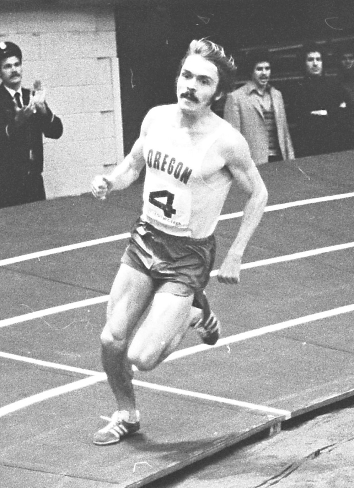

History
Pre’s Trail exists because of a track star with an opinion. Running overseas, Steve Prefontaine loved the feel of European cross country courses and came home convinced Eugene needed a purpose-built running trail in Alton Baker Park. Lane County took up the idea, and with the Oregon Track Club and University of Oregon coach Bill Bowerman behind it, the trail took shape. Pre never saw it finished — he died in a car accident in 1975 — but within four months the trail hosted a memorial race honoring him, with roughly five hundred runners.
Today it sits just north of the University of Oregon, across the Willamette, and it belongs to everyone — joggers, walkers, and cyclists share the bark. But it’s still a runner’s trail at heart: Sheldon High trains on it all season, local colleges and running clubs hold races there, and a good stretch of the Eugene Marathon passes over it.
Parking
Transit